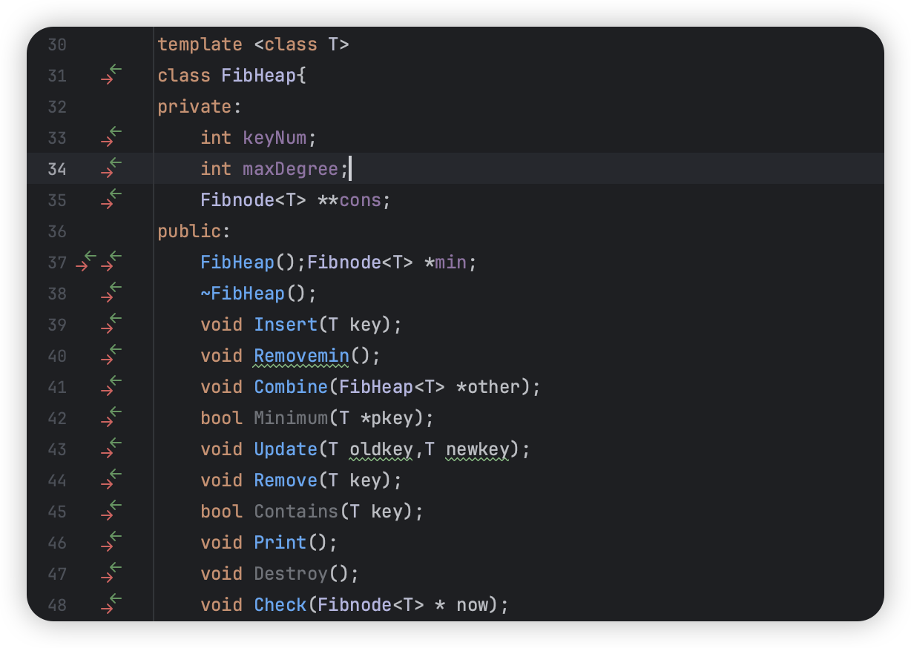
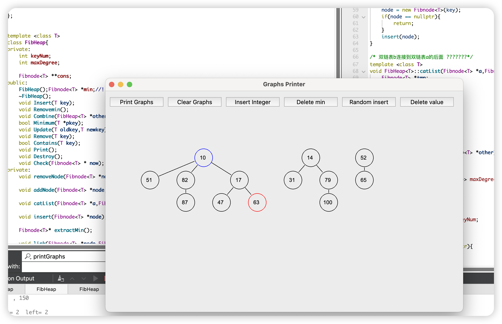
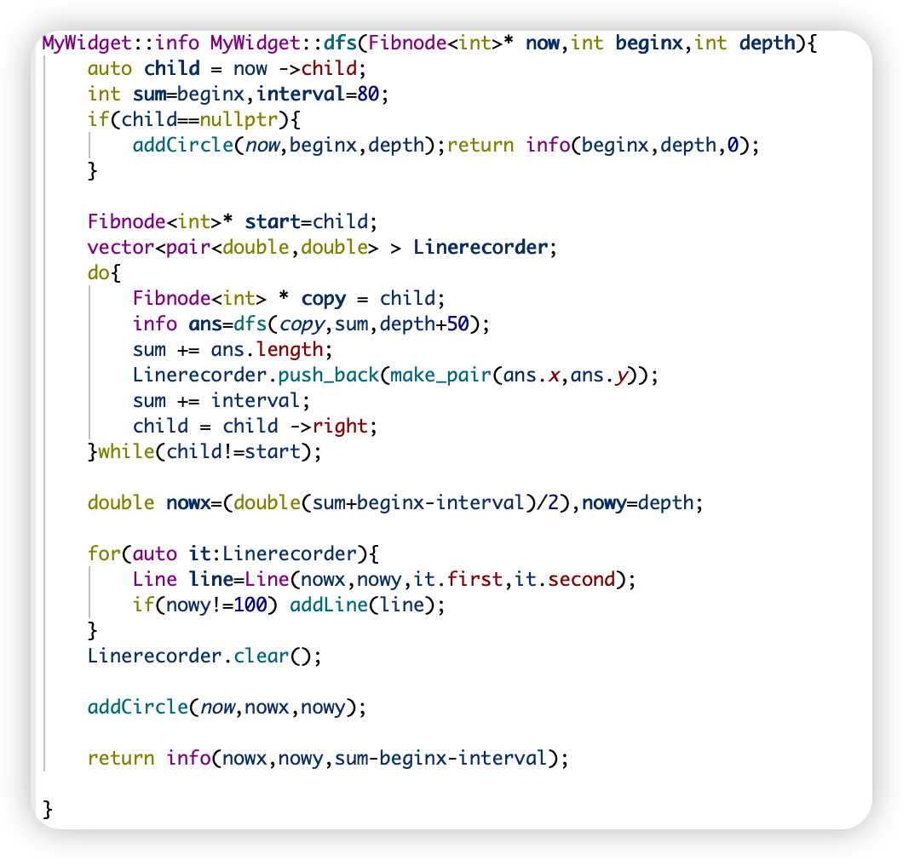
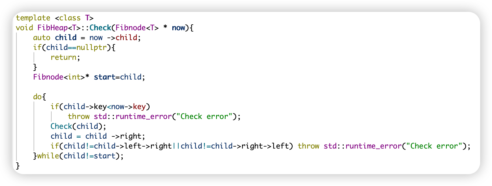
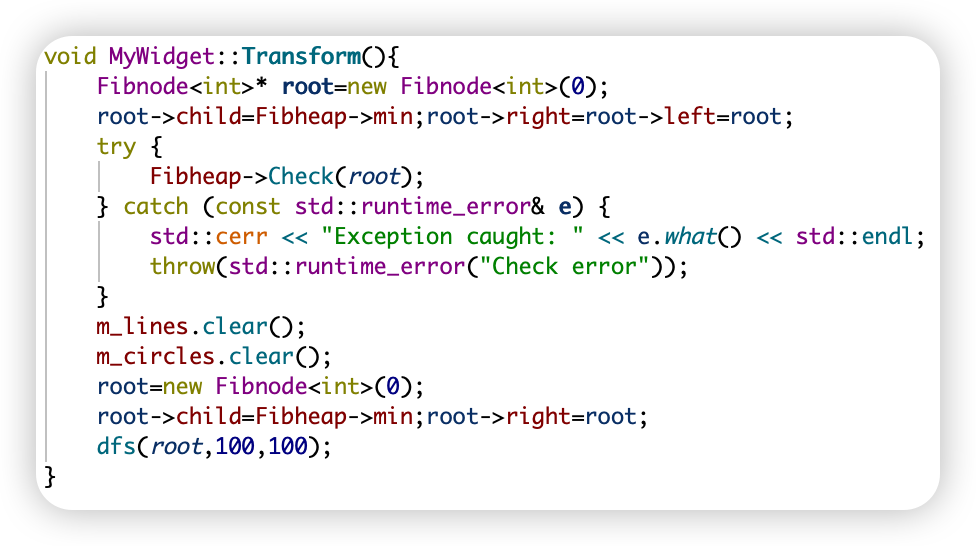
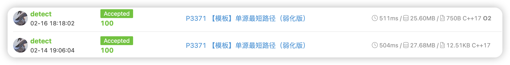
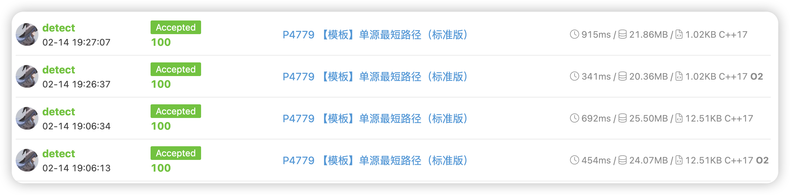
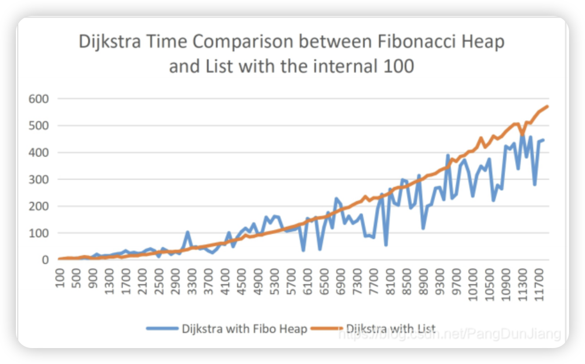

DS作业汇报 Fibonacci堆
DS作业汇报 Fibonacci堆
探究Fibonacci堆对dijkstra算法的优化效果
- 复杂度分析，与常见堆结构的理论横向对比
- 实现Fibonacci堆
- 验证Fibonacci堆的正确性
- 利用qt实现可视化效果，方便调试
- 设定check函数，自动检测堆性质以及双向链表的正确性
- 与其他堆以及stl提供的priority_queue进行对拍比较
- 将正确性得到保证的Fibonacci堆应用到dijkstra算法中，并在随机&高压数据集上进行测试，并记录实验结构
- 分析实验结果，得出结论
理论复杂度对比
操作 \ 数据结构 |
配对堆 | 二叉堆 | 左偏树 | 二项堆 | 斐波那契堆 |
|---|---|---|---|---|---|
| 插入（insert） | |||||
| 查询最小值（find-min） | |||||
| 删除最小值（delete-min） | |||||
| 合并 (merge) | |||||
| 减小一个元素的值 (decrease-key) | （下界 ，上界 ） | ||||
| 是否支持可持久化 |
在dijkstra算法中，我们需要频繁的进行insert操作，而Fibonacci堆在insert操作上有着极大的优势，因此我们期望Fibonacci堆在dijkstra算法中有着更好的表现。
实现Fibonacci堆

一步步实现即可。
为了更好的可拓展性，对标stl里的priority_queue，我采用template类模板的方式实现了Fibonacci堆。
这样在之后的qt可视化实验以及dijkstra算法的实验中，可以方便的用不同type的实例化调用Fibonacci堆。
验证Fibonacci堆的正确性
Qt实现可视化

-
通过分别计算每个节点的x，y坐标，然后利用QPainter进行绘制线、圆、数字等操作，实现了Fibonacci堆的可视化。
-
会对marked的节点和minimum节点进行特殊颜色标记，方便调试。
-
注意了Fibonacci堆的结偶性，没有在Fibnode内单独添加x,y坐标储存，而是仅利用一次树遍历得到所有的graph信息。

设定check函数

检查了堆性质以及双向链表的正确性。
将上述两点结合起来，在实现从数据结构转化到graph的transform function里，我们可以方便的调试Fibonacci堆。

与其他结构堆进行对拍比较
这里我使用大量的随机数据以及强力数据（针对一些极限情况的考虑，比如针对spfa最短路算法的最劣图构造）针对dijkstra算法需要的insert和remove_min操作进行了对拍，确保Fibonacci堆的正确性。
基于不同堆算法的dijkstra算法性能测试
这里我主要对比用priority_queue、Fibonacci堆以及list实现的dijkstra算法在随机图和强力图上的表现。
一些理论分析：
约定，节点数为n，边数为m。
- list
insert:
remove_min:
max: - priority_queue
insert:
remove_min:
max: - Fibonacci堆
insert:
remove_min:
max:
有了可靠的fibonacci堆，我们得以开展有效的对比实验。
为保证对比实验严谨，我使用完全相同的实现方式（包括io接口），只是在堆的选择上进行了更换。
在较弱数据下的实验结果

从上到下，分别是priority_queue和fibonacci堆在同样的十个数据集上运行的时间总和。
可以看到即使打开了对stl特友好的o2优化，fibonacci堆在较弱数据下也有着优势。list的表现是严重超时。
在强数据下的实验结果
节点在1e5数量级，边在2e5数量级，构图采取了一些极限情况的考虑，比如针对spfa最短路算法的最劣图构造。

- priority_queue 915ms
- fibonacci_heap 692ms
- priority_queue -o2 341ms
- fibonacci_heap -o2 454ms
- list ms
可以看到，在正常编译环境下，fibonacci堆在强数据下有着更为显著的优势(25% off)。
但是打开o2变异优化后，stl中的priority_queue算法完成了反超，o2对stl系列操作优化太大，另外我手撸的fibonacci堆实现比较粗糙，没有进行过多的优化。
针对随机图的实验结果
我引用相关论文的实验结果：

由于随机图有着许多美好的性质，使得list在随机图上的期望运行时间有很好的上限保证，而fibonacci堆常数较大，此消彼长，在随机图上并没有拉开太大的差距。
Summary
最后，对实验结果进行了分析，得出结论：
- Fibonacci堆在dijkstra算法中有着更好的表现，并且随着图越稠密，优势会越大。
- Fibonacci堆比list理论上全方位更优秀，只有在随机图上，list可以接近它的表现。
- Fibonacci堆常数较大，实现复杂，在实际应用中需要权衡。